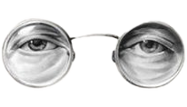

,
Cutting them off is the way to go!

In Mexico we sometimes say “Ojos que no ven, corazón que no siente”
Which translates to “eyes that do not see, heart that does not feel”
The "no contact rule" works because it helps break the habit you have of talking to them, the dopamine and oxytocin they used to provide, will need to be sourced from other places.
This takes me to the next step, being away from them will help you land your feet on the ground and